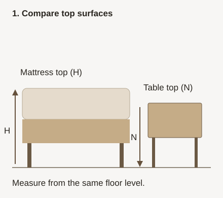
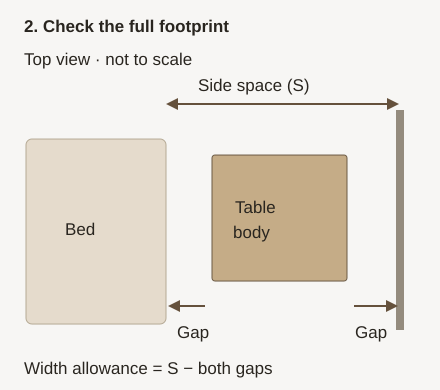

Measure before you choose
How tall should a nightstand be?
Start with the top of your mattress, then check the space beside the bed. A Japandi finish can suit the room while the actual table is too low, too wide or unable to open.
By Quiet Field Living · Sources checked October 22, 2026 · US product references
Use mattress-top height as your starting reference. Compare it with the nightstand’s top surface, then try that height from your usual position in bed. There is no single height that fits every bed or person. Check width, depth and opening clearance separately before shortlisting a product.
This is a desk-researched sizing guide, not a hands-on furniture review. Room illustrations elsewhere on this site are styling inspiration, not proof of a linked product’s dimensions, finish or construction.
Measure four things before shopping
- Mattress-top height (H): measure vertically from the floor to the top of the mattress, including any topper you use. Do not use the bed frame’s height or a pillow as the reference.
- Usable bedside width (S): measure from the outermost edge of the bed frame to the nearest wall or obstruction. Subtract any gaps you want to leave on both sides. Measure each side of the bed separately.
- Usable depth: tape the proposed footprint onto the floor. Keep your actual walking route, closet access, outlets and curtains usable; a table fitting into the width does not prove there is room in front.
- Opening space: find the drawer’s full extension or door’s swing envelope. Overall table depth does not tell you either of these. If the maker does not specify them, ask before buying when clearance is tight.


Test the reach: with a helper or stable existing surface, try the proposed tabletop height while lying and sitting in bed. Check whether you can reach the lamp switch and put down a glass comfortably. Our calculator reports dimensions; it cannot assess your reach or accessibility needs.
Check a nightstand’s height and width
Enter inches throughout. Use the exact variant’s overall dimensions, including anything that projects beyond the cabinet. “Reserved gaps” means the total space you choose to leave next to the bed and wall; it is not a recommended minimum.
Your measurements stay in this page and are not sent as analytics parameters. 1 inch = 2.54 cm.
A worked example: a 26-inch mattress top
A 22-inch table is 4 inches lower: 22 − 26 = −4. With 24 inches beside the frame and 4 inches reserved for both gaps together, the body-width allowance is 20 inches. A 19-inch-wide table leaves 1 inch within that allowance. Neither result proves that a door will open or the height will feel comfortable.
How our three existing nightstands compare
These are the three products already linked in our Japandi nightstand collection. The labels below describe the evidence we found, not a quality ranking. Dimensions are width × depth × height, per nightstand, in inches.
| Existing product | Dimensions & quantity | Materials & storage | Evidence & fit limits |
|---|---|---|---|
| Nathan James Mina Model 33201 ASIN B084HCTYZ7 | Manufacturer: 18.9 × 16.9 × 22.2 Amazon listing: 19 × 17 × 22 Selected listing: 1 table | Manufacturer lists engineered wood, laminate, metal and rattan. Open cubby: 17.7 inches wide × 5.5 inches high. Internal storage: 17.7 inches wide × 9.4 inches high. Depths are not specified. Hinged cane-front door; not a drawer. | Manufacturer + listing checked. Maker’s text and diagram use different precision. Confirm exact dimensions for a tight fit. Door swings to the left; required swing clearance is unknown. Not a solid-oak recommendation. Source |
| TROJM curved nightstands Listed model A30101014NW1 ASIN B0GJK2BYDW | Listing only: 17.7 × 13.5 × 19.7 Title / unit count: 2 tables “Number of items” field: 1 | Listing identifies engineered-wood frame and top, natural-oak finish, drawer and open shelf. Manufacturer material documentation: unknown. | Listing only; manufacturer verification missing. Quantity fields conflict; confirm two complete tables with the seller. Drawer extension is unknown. No recommendation where verified construction, quantity or opening clearance is required. Source |
| FurniXpress fluted nightstand Listed model FCN048_07 ASIN B0H3323WP2 | Listing only: 23.6 × 15.7 × 21.7 Selected listing: 1-pack | Listing identifies engineered wood, natural-oak finish and two drawers. Manufacturer material documentation: unknown. | Listing only; manufacturer verification missing. Drawer extension is unknown. No recommendation where manufacturer-verified dimensions, construction or opening clearance is required. Source |
None of these is automatically a fit. For example, if your mattress top is 28 inches high and you want a tabletop at that same level, all three listed heights are lower. If your maximum width is 18 inches, Mina and FurniXpress exceed it; TROJM is only a provisional paper fit because its manufacturer dimensions and operating clearances remain unverified.
For Mina, allow for the larger published values (19 inches wide, 17 inches deep and 22.2 inches high) while planning; that conservative envelope is not a new manufacturer specification. An oak-colored finish does not establish solid-oak construction. We do not infer dimensions or materials from room images.
Common sizing questions
Should a nightstand be higher or lower than the bed?
Compare the top of the nightstand with the top of the mattress, not the frame. Use a similar height as a reference, then try your own reach. We do not treat a fixed number of inches above or below as a universal comfort rule.
What size nightstand works with a king or queen bed?
The bed label alone cannot determine it. Mattress height, the frame’s outer width, space on each side, tabletop needs and opening clearance matter. Measure the real setup rather than choosing by a bed-size chart alone.
Does “natural oak” mean solid oak?
No. It can identify a color or finish. Look for a component-level material specification. Our checked Mina manufacturer page lists engineered wood and laminate among its materials; the other two listings also identify engineered wood.
Can I trust the width check if a drawer extension is unknown?
Only as body-width arithmetic. It does not establish operating clearance, usable walking space, assembly tolerance or a safe installation. Get the opening dimensions before buying for a tight space and follow the maker’s assembly and anchoring instructions.
Sources and method
We compared the existing collection’s three link destinations with published specifications on October 18, 2026, and rechecked Mina’s manufacturer page on October 22, 2026. Retailer fields are seller-reported, not our measurements. Independent manufacturer documentation was found only for Mina. We have not tested assembly, stability, finish, drawer movement or durability.
- Nathan James: Mina, SKU 33201 — single-table variant; overall dimensions, component materials, storage opening dimensions and left-hand door swing. The specifications list 18.9 W × 16.9 D × 22.2 H, while a diagram rounds to 19 W × 17 D × 22 H. The open cubby is listed as 17.7 W × 5.5 H and internal storage as 17.7 W × 9.4 H; storage depths and required door-swing clearance remain unspecified. Manufacturer’s linked assembly instructions. Amazon ASIN B084HCTYZ7 identifies model 33201, one table and rounded dimensions.
- Amazon US ASIN B0GJK2BYDW — model A30101014NW1 and listing specifications. The short link in the existing collection resolves to this ASIN. No independent manufacturer manual or specification sheet located. The listing title and unit count indicate two; the “Number of items” field says one. Quantity remains unresolved.
- Amazon US ASIN B0H3323WP2 — model FCN048_07 and listing specifications for the natural-oak, 1-pack variant. The short link in the existing collection resolves to this ASIN. No independent manufacturer manual or specification sheet located.
Access all three existing retailer links through the nightstand collection. Our diagrams, formulas and examples are original illustrations and arithmetic. No retailer product photography, reviews, ratings or live price data are reproduced.